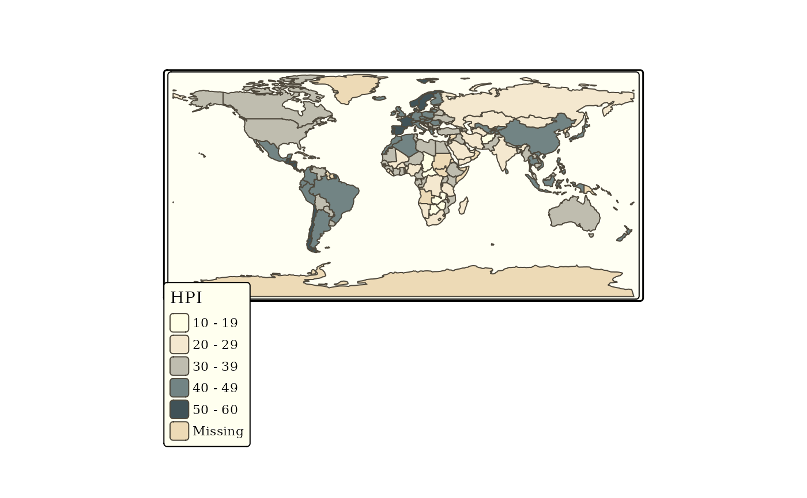

This element specifies the map layout. The main function tm_layout controls title, margins, aspect ratio, colors, frame, legend, among many other things. The function tm_legend is a shortcut to access all legend. arguments without this prefix. The other functions are wrappers for two purposes: tm_format specifies position related layout settings such as margins, and tm_style specifies general styling related layout settings such as colors and font. Typically, the former functions are shape dependent, and the latter functions are shape independent. See details for predefined styles and formats. With tmap.style, a default style can be specified. Multiple tm_layout elements (or wrapper functions) can be stacked: called arguments will be overwritten.
tm_layout( title, scale, title.size, bg.color, aes.color, aes.palette, attr.color, sepia.intensity, saturation, frame, frame.lwd, frame.double.line, asp, outer.margins, inner.margins, between.margin, outer.bg.color, fontface, fontfamily, compass.type, earth.boundary, earth.boundary.color, earth.boundary.lwd, earth.datum, space.color, legend.show, legend.only, legend.outside, legend.outside.position, legend.outside.size, legend.position, legend.stack, legend.just, legend.width, legend.height, legend.hist.height, legend.hist.width, legend.title.color, legend.title.size, legend.title.fontface, legend.title.fontfamily, legend.text.color, legend.text.size, legend.text.fontface, legend.text.fontfamily, legend.hist.size, legend.format, legend.frame, legend.frame.lwd, legend.bg.color, legend.bg.alpha, legend.hist.bg.color, legend.hist.bg.alpha, title.snap.to.legend, title.position, title.color, title.fontface, title.fontfamily, title.bg.color, title.bg.alpha, panel.show, panel.labels, panel.label.size, panel.label.color, panel.label.fontface, panel.label.fontfamily, panel.label.bg.color, panel.label.height, panel.label.rot, main.title, main.title.size, main.title.color, main.title.fontface, main.title.fontfamily, main.title.position, attr.outside, attr.outside.position, attr.outside.size, attr.position, attr.just, design.mode ) tm_legend(...) tm_style(style, ...) tm_format(format, ...)
Arguments
| title | Global title of the map. For small multiples, multiple titles can be specified. The title is drawn inside the map. Alternatively, use |
|---|---|
| scale | numeric value that serves as the global scale parameter. All font sizes, symbol sizes, border widths, and line widths are controlled by this value. Each of these elements can be scaled independently with the |
| title.size | Relative size of the title |
| bg.color | Background color. By default it is |
| aes.color | Default color values for the aesthetics layers. Should be a named vector with the names chosen from: |
| aes.palette | Default color palettes for the aesthetics. It takes a list of three items: |
| attr.color | Default color value for map attributes |
| sepia.intensity | Number between 0 and 1 that defines the amount of sepia effect, which gives the map a brown/yellowish flavour. By default this effect is disabled ( |
| saturation | Number that determines how much saturation (also known as chroma) is used: |
| frame | Either a boolean that determines whether a frame is drawn, or a color value that specifies the color of the frame. |
| frame.lwd | width of the frame |
| frame.double.line | draw a double frame line border? |
| asp | Aspect ratio. The aspect ratio of the map (width/height). If |
| outer.margins | Relative margins between device and frame. Vector of four values specifying the bottom, left, top, and right margin. Values are between 0 and 1. When facets are created, the outer margins are the margins between the outer panels and the device borders (see also |
| inner.margins | Relative margins inside the frame. Vector of four values specifying the bottom, left, top, and right margin. Values are between 0 and 1. By default, 0 for each side if master shape is a raster, otherwise 0.02. |
| between.margin | Margin between facets (small multiples) in number of text line heights. The height of a text line is automatically scaled down based on the number of facets. |
| outer.bg.color | Background color outside the frame. |
| fontface | global font face for the text in the map. It can also be set locally per element (see e.g. |
| fontfamily | global font family for the text in the map. It can also be set locally per (see e.g. |
| compass.type | type of compass, one of: |
| earth.boundary | Logical that determines whether the boundaries of the earth are shown or a bounding box that specifies the boundaries (an |
| earth.boundary.color | Color of the earth boundary. |
| earth.boundary.lwd | Line width of the earth boundary. |
| earth.datum | Geodetic datum to determine the earth boundary. By default epsg |
| space.color | Color of the space, i.e. the region inside the frame, and outside the earth boundary. |
| legend.show | Logical that determines whether the legend is shown. |
| legend.only | logical. Only draw the legend (without map)? Particularly useful for small multiples with a common legend. |
| legend.outside | Logical that determines whether the legend is plot outside of the map/facets. Especially useful when using facets that have a common legend (i.e. with |
| legend.outside.position | Character that determines the outside position of the legend. Only applicable when |
| legend.outside.size | Numeric value that determines the relative size of the legend, when |
| legend.position | Position of the legend. Vector of two values, specifying the x and y coordinates. Either this vector contains |
| legend.stack | Value that determines how different legends are stacked: |
| legend.just | Justification of the legend relative to the point coordinates. The first value specifies horizontal and the second value vertical justification. Possible values are: |
| legend.width | width of the legend. This number is relative to the map area (so 1 means the whole map width). If it is a negative number, it will be the exact legend width. If it is a positive number (by default), it will be the maximum legend width; the actual legend width will be decreased automatically based on the legend content and font sizes.or Default color value for map attributes |
| legend.height | height of the legend. If it is a negative number, it will be the exact legend height. If it is a positive number (by default), it will be the maximum legend height; the actual legend height will be decreased automatically based on the legend content and font sizes. |
| legend.hist.height | height of the histogram. This height is initial. If the total legend is downscaled to |
| legend.hist.width | width of the histogram. By default, it is equal to the |
| legend.title.color | color of the legend titles |
| legend.title.size | Relative font size for the legend title |
| legend.title.fontface | font face for the legend title. By default, set to the global parameter |
| legend.title.fontfamily | font family for the legend title. By default, set to the global parameter |
| legend.text.color | color of the legend text |
| legend.text.size | Relative font size for the legend text elements |
| legend.text.fontface | font face for the legend text labels. By default, set to the global parameter |
| legend.text.fontfamily | font family for the legend text labels. By default, set to the global parameter |
| legend.hist.size | Relative font size for the choropleth histogram |
| legend.format | list of formatting options for the legend numbers. Only applicable for layer functions (such as
|
| legend.frame | either a logical that determines whether the legend is placed inside a frame, or a color that directly specifies the frame border color. |
| legend.frame.lwd | line width of the legend frame (applicable if |
| legend.bg.color | Background color of the legend. Use |
| legend.bg.alpha | Transparency number between 0 (totally transparent) and 1 (not transparent). By default, the alpha value of the |
| legend.hist.bg.color | Background color of the histogram |
| legend.hist.bg.alpha | Transparency number between 0 (totally transparent) and 1 (not transparent). By default, the alpha value of the |
| title.snap.to.legend | Logical that determines whether the title is part of the legend. By default |
| title.position | Position of the title. Vector of two values, specifying the x and y coordinates. Either this vector contains "left", "LEFT", "center", "right", or "RIGHT" for the first value and "top", "TOP", "center", "bottom", or "BOTTOM" for the second value, or this vector contains two numeric values between 0 and 1 that specifies the x and y coordinates of the tile. The uppercase values correspond to the position without margins (so tighter to the frame).
By default the title is placed on top of the legend (determined by |
| title.color | color of the title |
| title.fontface | font face for the title. By default, set to the global parameter |
| title.fontfamily | font family for the title. By default, set to the global parameter |
| title.bg.color | background color of the title. Use |
| title.bg.alpha | Transparency number between 0 (totally transparent) and 1 (not transparent). By default, the alpha value of the |
| panel.show | Logical that determines if the map(s) are shown as panels. If |
| panel.labels | Panel labels. Only applicable when |
| panel.label.size | Relative font size of the panel labels |
| panel.label.color | Font color of the panel labels |
| panel.label.fontface | font face for the panel labels. By default, set to the global parameter |
| panel.label.fontfamily | font family for the panel labels. By default, set to the global parameter |
| panel.label.bg.color | Background color of the panel labels |
| panel.label.height | Height of the labels in number of text line heights. |
| panel.label.rot | Rotation angles of the panel labels. Vector of two values: the first is the rotation angle (in degrees) of the row panels, which are only used in cross-table facets (when |
| main.title | Title that is printed above the map (or small multiples). When multiple pages are generated (see |
| main.title.size | Size of the main title |
| main.title.color | Color of the main title |
| main.title.fontface | font face for the main title. By default, set to the global parameter |
| main.title.fontfamily | font family for the main title. By default, set to the global parameter |
| main.title.position | Position of the main title. Either a numeric value between 0 (left) and 1 (right), or a character value: |
| attr.outside | Logical that determines whether the attributes are plot outside of the map/facets. |
| attr.outside.position | Character that determines the outside position of the attributes: |
| attr.outside.size | Numeric value that determines the relative height of the attribute viewport, when |
| attr.position | Position of the map attributes, which are |
| attr.just | Justification of the attributes relative to the point coordinates. The first value specifies horizontal and the second value vertical justification. Possible values are: |
| design.mode | Not used anymore, since it is now only a tmap option: see |
| ... | other arguments from |
| style | name of the style |
| format | name of the format |
Details
Predefined styles:
"white" | White background, commonly used colors (default) |
"gray"/"grey" | Grey background, useful to highlight sequential palettes (e.g. in choropleths) |
"natural" | Emulation of natural view: blue waters and green land |
"bw" | Greyscale, obviously useful for greyscale printing |
"classic" | Classic styled maps (recommended) |
"cobalt" | Inspired by latex beamer style cobalt |
"albatross" | Inspired by latex beamer style albatross |
"beaver" | Inspired by latex beamer style beaver |
| --------------------------- | --------------------------------------------------------------------------------------------------- |
Predefined formats
"World" | Format specified for world maps |
"World_wide" | Format specified for world maps with more space for the legend |
"NLD" | Format specified for maps of the Netherlands |
"NLD_wide" | Format specified for maps of the Netherlands with more space for the legend |
| --------------------------- | --------------------------------------------------------------------------------------------------- |
References
Tennekes, M., 2018, tmap: Thematic Maps in R, Journal of Statistical Software, 84(6), 1-39, doi: 10.18637/jss.v084.i06
See also
Examples
data(World, land) tm_shape(World) + tm_fill("pop_est_dens", style="kmeans", title="Population density") + tm_style("albatross", frame.lwd=10) + tm_format("World", title="The World")if (FALSE) { tm_shape(land) + tm_raster("elevation", breaks=c(-Inf, 250, 500, 1000, 1500, 2000, 2500, 3000, 4000, Inf), palette = terrain.colors(9), title="Elevation", midpoint = NA) + tm_shape(World, is.master=TRUE) + tm_borders("grey20") + tm_grid(projection="longlat", labels.size = .5) + tm_text("name", size="AREA") + tm_compass(position = c(.65, .15), color.light = "grey90") + tm_credits("Eckert IV projection", position = c("right", "BOTTOM")) + tm_style("classic") + tm_layout(bg.color="lightblue", inner.margins=c(.04,.03, .02, .01), earth.boundary = TRUE, space.color="grey90") + tm_legend(position = c("left", "bottom"), frame = TRUE, bg.color="lightblue") } tm_shape(World, projection="+proj=robin") + tm_polygons("HPI", palette="div", n=7, title = "Happy Planet Index") + tm_credits("Robinson projection", position = c("right", "BOTTOM")) + tm_style("natural", earth.boundary = c(-180, -87, 180, 87), inner.margins = .05) + tm_legend(position=c("left", "bottom"), bg.color="grey95", frame=TRUE)# Example to illustrate the type of titles tm_shape(World) + tm_polygons(c("income_grp", "economy"), title = c("Legend Title 1", "Legend Title 2")) + tm_layout(main.title = "Main Title", main.title.position = "center", main.title.color = "blue", title = c("Title 1", "Title 2"), title.color = "red", panel.labels = c("Panel Label 1", "Panel Label 2"), panel.label.color = "purple", legend.text.color = "brown")if (FALSE) { # global option tmap.style demo # get current style current.style <- tmap_style() qtm(World, fill = "economy", format = "World") tmap_style("col_blind") qtm(World, fill = "economy", format = "World") tmap_style("cobalt") qtm(World, fill = "economy", format = "World") # set to current style tmap_style(current.style) } # TIP: check out these examples in view mode, enabled with tmap_mode("view")